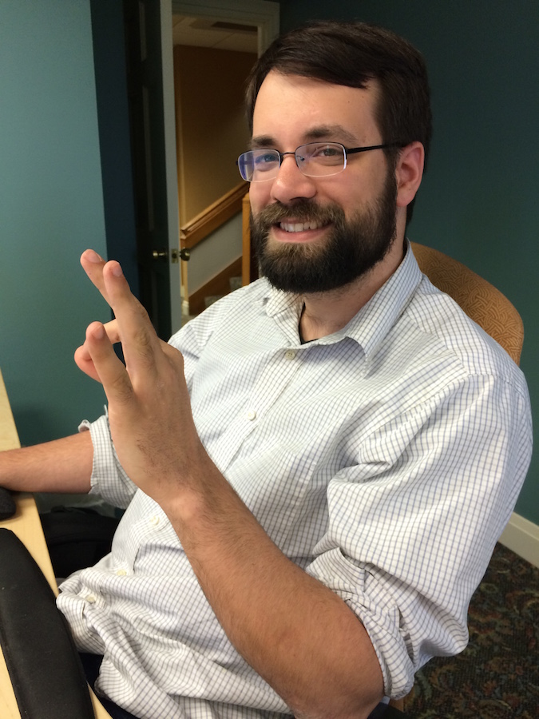

Maintaining a Local Dev Meetup
Jacob M. Roufa@jroufa
About Me
Hi I'm Jacob and I'm here to talk to you about
I can't talk about community without talking about my most important community...
I first learned about community from my family...
Or a community I spend 40+ hours a week with...
I continue to learn about community every day through my work
Or a community I spend 40+ hours a week with...
Love to have fun and enjoy what we do
Or the community I live in...
And I try to share that community with the place that I live
Or the community I live in...
But I'm really here to talk about this community!
Don't be afraid to dance like Ballmer
Meetup organizers everywhere unite!

(lead with) That being said...
So... what's a meetup?
For real?
Talk about what RockDevs is for you.
What makes a good
If you're a fan of satire and art, you might already know Jenn
Are your users staying engaged?
That's what matters most!
Where do I fit in to all of this?
Too futuristic?
Too unreal?
Utopian ideals are difficult to translate to reality. But it's a good place to start!
Just because not everybody doesn't abide doesn't mean I can't!
I played.
Talk about learning patience for others
Too low tech?
Most of the communities we are a part of are NOT tech-focused, so this is important everywhere
I learned.
I learned a lot about community in Chicago
"Open-source development breaks this bind, making it far easier for tester and developer to develop a shared representation ...to communicate effectively about it." - Eric Raymond
This quote talks about OSS dev, but relevant to communication model in all communities
Let's talk practically though!
Given what you know about my background...
Meetups are...
a wonderful way to learn.
an opportunity to teach.
a chance to become a better version of ourselves.
It's open source IRL!
Relate to FGC
Meetups for learning?
At least that's what we hope the takeaway is...
Meetups for teaching?
Teaching is about being involved and having a conversation
Meetups for a better me!
Who feels better after a meetup?
So think about it...
What do you do every day?
StackOverflow
MDN
Google
IRC
the list goes on... et al ad nauseam
Wouldn't you rather talk about it in person?
Our colleagues are our most valuable resource
Personal experience trumps all
Remember how we talked about user engagement?
So what do YOUR users need?
Talk about combining PHP and JS groups
Meetups are about
Community
Sharing interest
Professional Networking and Support
Now that we've qualified a meetup...
How do we run one?
Remember before when I was talking about my co-organizer?
Share the load if you can. Another perspective and set of hands can really help.
Code of conduct
Y'all had better know what this is, because you agreed to it in attending today!
No, this kind of space...
Universities/colleges LOVE learning opportunities
Making your life easier!
Shared calendars/documents
Social media
Email lists
Meetup.com (and other related sites)
Mention all the things meetup does, but by no means end-all-be-all
Remember to keep focus on your users
Do something different
Pivot if you need to
This is about tactic for topics, not entirety of meetup
Use resources at hand
Human resources, from the most personal to semi-local/regional
Coworkers
Remember that not everybody has the time to commit to a meetup and that's OK!
Regional meetups
Visit meetups in an hour-ish radius
Acknowledge failings of this phrase in our industry
I hope I've helped to impart a thing or two about community here, today.
Remember to be of service to your users!
Know that you have complete control of your participation!
Don't be afraid to do something drastically different... the results may surprise you!